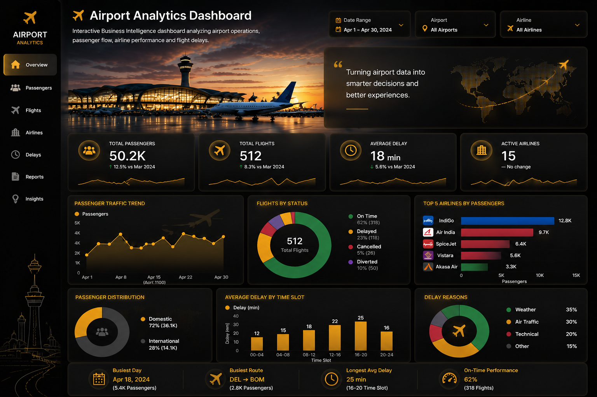

Interactive Business Intelligence dashboard analyzing airport operations, passenger flow, airline performance and flight delays.

Total Passengers
Total Flights
Average Delay
Airlines
Passenger trends, airline comparison and operational efficiency analysis.